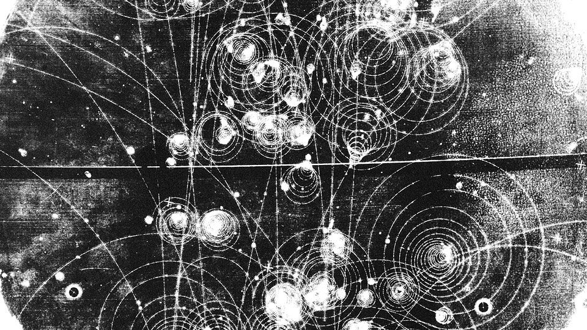

Starter Pack for Particle Physicists
Table of Contents
Starter Pack For Particle Physicists

If you're starting research in particle physics, this guide provides essential reference points and tools to streamline your search. Whether you're an undergraduate or a seasoned researcher, these resources are invaluable. Check each link, as even familiar ones might offer insights you haven't explored yet.
Search Engines
arXiv
arXiv is a free and open-access archive for scholarly articles in fields like physics, mathematics, computer science, quantitative biology, and more. It currently hosts over 1.9 million papers. While the materials are not peer-reviewed, they are widely used by researchers for preliminary findings and ideas.
- Key Sections for Particle Physics: High Energy Physics - Phenomenology and Experiment.
- Why Use arXiv? It's the go-to resource for staying updated on recent papers and finding early-stage research in particle physics.
InspireHEP
InspireHEP is a specialized platform designed for high energy physics. It acts as a comprehensive hub for scholarly information, including papers, seminars, and conference proceedings.
- Why Use InspireHEP? It provides curated resources specifically for high energy physics, helping you find cutting-edge research and events.
Zenodo
Zenodo is a versatile open-access repository developed under CERN's European OpenAIRE program. It allows researchers to upload and share papers, datasets, software, reports, and more. Each submission receives a DOI, making it easy to cite.
- What Can You Find? Videos, posters, presentations, and digital research artifacts—all available for free.
- Why Use Zenodo? It's a one-stop shop for diverse research materials, including non-traditional formats like presentations and posters.
Google Scholar
Google Scholar is a powerful, freely accessible web search engine for scholarly literature across all disciplines. It indexes full texts and metadata, making it easier to locate papers, theses, and books.
- Why Use Google Scholar? Its broad coverage makes it a versatile tool for finding articles in both general and niche areas.
Microsoft Academic
Microsoft Academic is an alternative to Google Scholar. It offers robust search capabilities and detailed metadata for academic papers.
- Why Use Microsoft Academic? Its clean interface and advanced filtering options make it ideal for systematic searches.
Particle Data Group (PDG)
The Review of Particle Physics is a comprehensive reference guide published by the Particle Data Group. It summarizes key areas in particle physics and related cosmology topics.
- Why Use PDG? It’s an authoritative source for fundamental constants, properties of particles, and reviews of experimental techniques.
Indico (CERN)
CERN Indico is a platform that organizes and archives event notes from CERN. It includes lectures, workshops, and conferences, making it a goldmine for learning and networking.
- Why Use Indico? Stay informed about past and upcoming events related to particle physics.
Search Engines for Theses
Theses are an excellent starting point for research, as they are typically detailed and explanatory. Unlike published papers, theses often provide extensive background information, literature reviews, and thorough discussions of methodologies. As a beginner, you'll likely gain more insights from theses than from brief journal articles.
Here are some recommended databases for finding high-quality theses:
OCLC WorldCat
- OCLC WorldCat is a global catalog that lists dissertations and theses from most colleges and universities in the United States, Canada, and many other countries.
- Why Use WorldCat? It provides access to an extensive range of dissertations, making it a valuable resource for finding research from diverse institutions worldwide.
Open Access Theses and Dissertations (OATD)
- OATD aims to be the best resource for finding open-access graduate theses and dissertations worldwide.
- Features:
- Indexes metadata from over 1,100 colleges, universities, and research institutions.
- Currently includes more than 3.4 million theses and dissertations.
- Why Use OATD? It focuses on open-access content, ensuring you can access the full text of most entries.
ProQuest Dissertations and Theses Global Database
- ProQuest offers a searchable and browsable database of dissertations and theses spanning from 1743 to the present day.
- Why Use ProQuest? It is one of the most comprehensive repositories for historical and contemporary academic work.
DART-Europe
- DART-Europe provides a single European portal for discovering electronic theses and dissertations.
- Features:
- Access to over 490,000 open-access theses from 557 universities in 28 European countries.
- Why Use DART-Europe? It's an excellent resource for accessing European research in multiple languages and fields.
UCL Discovery
- UCL Discovery is University College London's open-access repository.
- Features:
- Showcases full texts of UCL research publications, including theses.
- Why Use UCL Discovery? It provides direct access to theses from a leading research institution.
Why Theses?
Starting your research by reading theses helps you:
- Gain a deeper understanding of a topic through comprehensive explanations.
- Learn the foundational knowledge and context that shorter published papers might omit.
- Explore the methodologies and data analysis techniques in detail.
Let these resources guide your first steps into the world of academic research. Happy exploring!
How to Find Review Articles
Review articles are an excellent starting point for any research project. They provide a broad overview of a topic, summarize key developments, and often include extensive bibliographies for further reading. Here’s how you can effectively find and use review articles in your research:
General Tips for Finding Review Articles
- Use platforms like Web of Science or Google Scholar to search across multiple journals simultaneously.
- For better results, apply the following strategies:
- Use Advanced Search: Instead of "simple search," filter results to include only review articles.
- Sort by Citations: Highly cited papers are often more impactful and widely accepted in the field.
- Sort by Publication Date: Newer reviews provide up-to-date insights into ongoing developments.
- Focus on Lengthy Papers: Longer articles are more likely to be comprehensive and detailed.
For more detailed guidance, refer to the UCLA Libraries Notes on searching for review articles.
Journals Specializing in Review Articles
Some journals exclusively or primarily publish review articles. Searching directly within these journals can be a great way to find high-quality reviews tailored to your field of study. Below are some of the most respected journals for review articles in physics and related disciplines:
- Annual Reviews: A leading source for authoritative, comprehensive reviews across various disciplines.
- Progress in Particle and Nuclear Physics: Focuses on reviews in particle and nuclear physics.
- Reviews of Modern Physics: Publishes in-depth reviews of significant advances in physics.
- Reviews in Physics: Covers key developments in physics, with a focus on interdisciplinary research.
- Reports on Progress in Physics: Offers comprehensive review articles across all areas of physics.
Why Start with Review Articles?
- Broad Perspective: Review articles provide a big-picture view of the topic, helping you understand foundational concepts and key issues.
- Time Efficiency: They save time by summarizing years of research in a single paper.
- Resourceful Bibliographies: Most reviews include extensive reference lists, guiding you to additional primary research articles.
By following these strategies and utilizing the listed resources, you can efficiently gather the foundational knowledge necessary for your research. Review articles not only illuminate the current state of a field but also highlight areas where further exploration is needed.
How to Read a Scientific Paper
Reading scientific papers can be challenging, especially for beginners. Academic papers are dense, filled with technical details, and often assume a significant level of prior knowledge. However, developing the skill to read and understand them is essential for research. Here are some tips and resources to guide you through the process.
Challenges in Reading Scientific Papers
- Complex Ideas: Papers often present new concepts, methodologies, and calculations that may take time to understand.
- Dense Writing: Academic language can be difficult to parse, requiring careful, repeated reading.
- Background Knowledge: Papers usually assume familiarity with the topic, which can be a hurdle for newcomers.
To tackle these challenges, it’s helpful to learn from experts who have shared their strategies for reading papers effectively.
Recommended Resources
- How to Read a Paper by S. Keshav:
- This classic guide introduces a systematic approach to reading academic papers, dividing the process into three passes: a quick overview, a more detailed read, and an in-depth analysis.
- “How to (Seriously) Read a Scientific Paper,” Science | AAAS:
- This article offers practical tips on breaking down a paper into manageable parts, focusing on the abstract, introduction, figures, and conclusion to grasp the core message.
Tips for Effective Reading
- Start with the Abstract and Figures: Get a quick sense of the paper’s purpose, key findings, and methodology.
- Read the Introduction and Conclusion: These sections provide context, objectives, and the main takeaways.
- Focus on Figures and Tables: Visual representations often summarize the most critical data.
- Take Notes: Highlight key points, jot down questions, and summarize sections in your own words.
- Use References: Follow up on cited works to fill gaps in your understanding.
- Don’t Worry About Understanding Everything: Focus on the parts relevant to your research and revisit challenging sections later.
Why Read Scientific Papers?
- Expand Knowledge: Stay updated on the latest developments in your field.
- Develop Critical Thinking: Learn to evaluate methodologies, data, and conclusions critically.
- Inspire New Ideas: Reading widely can spark innovative research questions and approaches.
By adopting these strategies and exploring the recommended resources, you can gradually improve your ability to read and understand scientific papers, making this essential skill an integral part of your research journey.
Web Pages to Follow
Staying updated with high-quality resources is essential for anyone in particle physics. Below are some must-follow websites that combine engaging content with in-depth scientific insights. Make these a part of your routine—check them as often as you check your social media!
Symmetry Magazine
- Symmetry Magazine is a joint publication by Fermilab and SLAC that offers a window into the world of particle physics.
- Why Follow?
- It provides clear and accessible explanations of complex topics.
- Stunning visuals accompany every article, making the content engaging and easier to understand.
- Articles cover cutting-edge research, historical perspectives, and the human stories behind the science.
Quanta Magazine
- Quanta Magazine | Science and Math News is an editorially independent publication by the Simons Foundation.
- What They Say: "Quanta Magazine is dedicated to enhancing public understanding of science. Why Quanta? Albert Einstein called photons 'quanta of light.' Our goal is to 'illuminate science.'"
- Why Follow?
- Articles span physics, mathematics, biology, and computer science.
- It blends rigorous science with storytelling, appealing to both scientists and the general public.
Starts With a Bang by Ethan Siegel
- Starts With a Bang is a blog by Ethan Siegel, a theoretical astrophysicist and science communicator.
- Why Follow?
- Features fascinating takes on cosmology, particle physics, and the universe’s mysteries.
- Written in an accessible style that inspires curiosity and deeper exploration.
BackReaction by Sabine Hossenfelder
- BackReaction is a blog by Sabine Hossenfelder, a theoretical physicist known for her critical perspectives on physics and academia.
- Why Follow?
- Covers physics topics with a no-nonsense approach, tackling controversies and challenges in the field.
- Offers valuable insights into the scientific process and philosophical questions in physics.
Popular Science Journals
Reading popular science journals is a great way to stay informed about the latest developments in physics and related fields. These journals are often more accessible than technical papers, making them perfect for broadening your knowledge and sparking new ideas. Aim to read at least one paper monthly to keep yourself updated and inspired.
PhysicsWorld by IOP
- PhysicsWorld is published by the Institute of Physics (IOP).
- Why Read?
- Covers global developments in physics, including cutting-edge research, industrial applications, and career guidance.
- Offers engaging features and interviews with leading physicists.
PhysicsToday by APS
- PhysicsToday is the flagship publication of the American Physical Society (APS).
- Why Read?
- Features authoritative reviews, news, and opinion pieces on the latest trends in physics.
- A must-read for staying informed about breakthroughs and societal impacts of physics.
Scientific American
- Scientific American is one of the oldest and most renowned science magazines.
- Why Read?
- Explores physics alongside other disciplines like biology, astronomy, and technology.
- Known for its high-quality graphics and well-researched articles that appeal to both scientists and the general public.
NewScientist
- NewScientist covers science and technology news from around the world.
- Why Read?
- Offers brief, digestible updates on recent discoveries and trends.
- Ideal for keeping up with developments in physics and beyond.
American Journal of Physics (AJP)
- American Journal of Physics is an excellent resource for undergraduate and graduate-level physics education.
- Why Read?
- Focuses on teaching and understanding physics concepts in depth.
- If you’re an undergraduate working on a project, consider submitting a paper to AJP—it’s a great opportunity to contribute to the field.
How to Access:
Most of these journals can be accessed through university libraries. Check with your institution for subscriptions or interlibrary loan services. Reading these journals regularly can provide both inspiration and a deeper understanding of physics beyond your specialization.
Summer Schools & Lecture Notes
Attending summer schools and exploring lecture notes is an excellent way to deepen your understanding of particle physics. These programs are particularly valuable for graduate students, offering opportunities to learn from leading experts, interact with peers, and gain insights into cutting-edge research. Lecture notes from these schools are often made publicly available, especially on platforms like arXiv.
Summer Schools
- TASI Lectures: Theoretical Advanced Study Institute (TASI) at the University of Colorado Boulder (2005–present).
- Focus: Covers a wide range of topics in particle physics and related fields.
- Why Attend? A prestigious program with detailed lecture notes available for those unable to attend.
- SLAC Summer Institute Conferences: SLAC National Accelerator Laboratory (2012–present).
- Organized annually in July/August.
- Focus: A mix of theoretical and experimental particle physics topics.
- Why Attend? Provides a unique blend of lectures, hands-on activities, and networking opportunities.
- Invisibles School: Invisibles School (2015–present).
- Organized under the European project framework, focusing on neutrino physics, dark matter, and other "invisible" particles.
- Why Attend? An excellent opportunity for graduate students interested in the frontiers of particle physics. The school often includes lectures, problem-solving sessions, and career advice.
Lecture Notes
- Most of the summer school lecture notes are available on arXiv or the respective program websites.
- Why Use Lecture Notes?
- They provide detailed explanations and cover the latest advancements in the field.
- Authored by leading experts, these notes often bridge the gap between textbooks and research papers.
—
### Tips for Students
- Plan Early: Applications for summer schools often have strict deadlines. Keep an eye on announcements and apply early.
- Engage Actively: If you attend, actively participate in discussions and ask questions.
- Leverage Resources: Even if you can’t attend, lecture notes from these programs are invaluable for self-study.
Summer schools and lecture notes are a gateway to gaining deeper insights into particle physics and building a network of peers and mentors. Make the most of these opportunities during your graduate studies.
Neutrino-Related Useful Links
Neutrinos are among the most fascinating particles in particle physics, playing a crucial role in understanding the universe's fundamental workings. Below are some invaluable resources for exploring neutrino physics, from cutting-edge research projects to comprehensive tutorials and classifications.
HIDDeN Project
- HIDDeN is a European ITN project (H2020-MSCA-ITN-2019//860881-HIDDeN) dedicated to uncovering hidden (a)symmetries and particles in the invisible sector, including neutrinos, dark matter, and other elusive particles.
- Highlights:
- Builds upon the expertise of previous projects like Elusives and FP7 ITN Invisibles.
- Explores new scientific realms, particularly the interactions between neutrinos and the invisible sector.
- Why Follow? HIDDeN organizes summer schools and offers graduate positions, making it an excellent resource for early-career researchers.
The Net Advance of Physics (Neutrinos)
- The Net Advance of Physics is a curated collection of review articles and tutorials on neutrinos, presented in an encyclopedic format.
- Why Use? This is a go-to resource for structured and in-depth learning about neutrinos, ideal for self-study or reference.
Neutrino Unbound
- Neutrino Unbound offers an extensive classification of resources related to neutrino physics.
- Why Use? It provides a centralized repository of information on all aspects of neutrinos, from theoretical insights to experimental data.
How to Use These Resources
- HIDDeN Project:
- Follow their website for updates on research progress, schools, and job opportunities.
- Engage with their published materials to stay informed about the invisible sector.
- The Net Advance of Physics:
- Use this as a starting point for learning about specific topics within neutrino physics.
- Leverage the tutorials and reviews for a deeper understanding.
- Neutrino Unbound:
- Explore its classifications to quickly find resources aligned with your research interests.
Feel free to explore these links and share any additional resources you find.
Feynman Diagrams
Feynman diagrams are indispensable tools in particle physics for visualizing and calculating interactions between particles. Whether you're working on theoretical problems or presenting your research, you'll often need to create these diagrams. Below are some excellent tools for plotting Feynman diagrams, tailored for different levels of complexity and preferences.
Tools for Plotting Feynman Diagrams
- Draw Feynman Diagrams Online: Draw Feynman Diagrams Online
- What It Is: A browser-based tool for quickly sketching Feynman diagrams.
- Why Use It? Ideal for quick and straightforward visualizations without the need for additional software.
- JaxoDraw: JaxoDraw
- What It Is: A Java-based program designed for creating Feynman diagrams.
- Key Features:
- Intuitive graphical interface.
- Outputs diagrams in various formats, including LaTeX code.
- Why Use It? A versatile choice for users who want a standalone application with export options.
- TikZ-Feynman: TikZ-Feynman
- What It Is: A LaTeX package that uses the TikZ library for plotting Feynman diagrams.
- Key Features:
- High-quality, publication-ready diagrams.
- Fully customizable with LaTeX.
- Why Use It? Perfect for researchers familiar with LaTeX who need precise and professional-quality diagrams.
- feynMF/feynMP: feynMF/feynMP
- What It Is: A LaTeX package for drawing Feynman diagrams.
- Key Features:
- Integrated directly into LaTeX workflows.
- Allows for complex and detailed diagrams.
- Why Use It? A reliable option for LaTeX users seeking a tried-and-true method for creating diagrams.
Choosing the Right Tool
- For Quick Sketches: Use "Draw Feynman Diagrams Online."
- For User-Friendly Software: Try JaxoDraw.
- For LaTeX Integration: Opt for TikZ-Feynman or feynMF/feynMP.
Experiment with these tools to find the one that best suits your needs. Mastering Feynman diagram plotting not only enhances your presentations but also helps clarify complex interactions in your research.